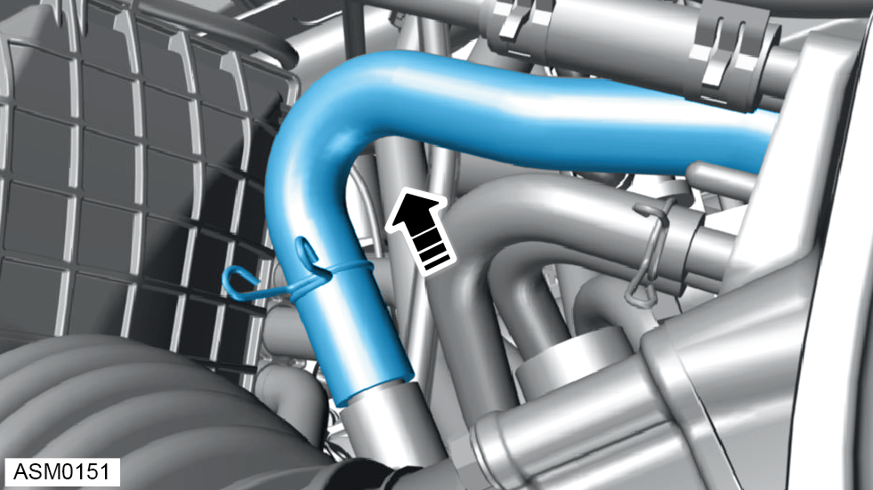
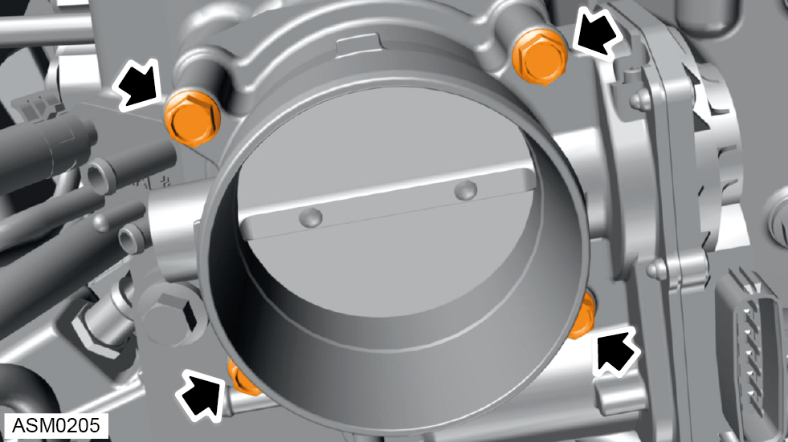
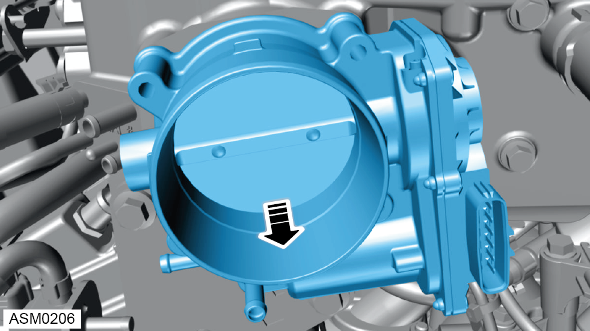

Electronic Throttle Body - V6
Print
Operation Code: 42.04.05-02
Removal
- Disconnect battery. Refer to procedure.
- Remove rear engine cover. Refer to procedure.
- Loosen hose clamps (x2) securing intake pipe to Mass Air Flow (MAF) sensor housing and throttle body.
- Release hose clamp securing supercharger vacuum hose to intake pipe.

- Remove supercharger vacuum hose from intake pipe.
- Release and remove intake pipe.
 WARNING: Allow engine to cool completely before proceeding to prevent injury.
WARNING: Allow engine to cool completely before proceeding to prevent injury.
- Release hose clamp securing coolant bypass hose to throttle body.
NOTE: Place a suitable container or rag under the hose to prevent coolant spillage.
- Disconnect coolant bypass hose from throttle body and plug hose.
- Release hose clamp securing hose to supercharger.
- Disconnect hose from supercharger.
- Disconnect fuel evaporation hose from supercharger.
- Release hose clamp securing coolant bypass hose to throttle body.
- Disconnect coolant bypass hose from throttle body and block off with suitable plug.
- Release harness connector from throttle body.

- Remove bolts (x4) securing throttle body to supercharger. Torque 10 Nm.

- Remove throttle body.
NOTE: Discard and replace throttle body gasket.
Installation
- Installation is the reverse of removal procedure except for the following:
- Top up coolant and check fluid level.
- Perform a diagnostic read and clear memory using Lotus Insight tool.